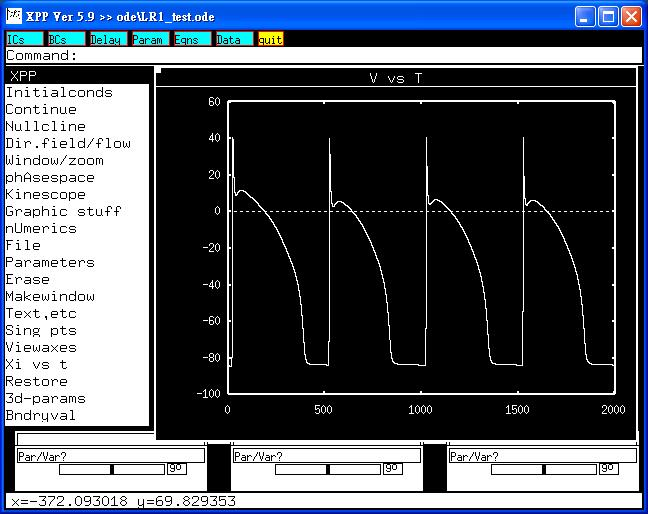

<pre>
This is the readme.txt for the models associated with the paper

Luo CH and Rudy Y. A model of the venticular cardiac action potential:
depolarization, repolarization and their interaction. Circ Res
1991;68: 1501-1526.

Wu SN. Simulation of the cardiac action potential based on the
Hodgkin- Huxley kinetics with the use of Microsoft Excel
spreadsheets. Chinese J Physiol 2004;47:15-22.

Abstract:

A mathematical model of the membrane action potential of the mammalian
ventricular cell is introduced. The model is based, whenever possible,
on recent single-cell and single-channel data and incorporates the
possibility of changing extracellular potassium concentration
[K]o. The fast sodium current, INa, is characterized by fast upstroke
velocity (Vmax = 400 V/sec) and slow recovery from inactivation. The
time-independent potassium current, IK1, includes a negative-slope
phase and displays significant crossover phenomenon as [K]o is
varied. The time-dependent potassium current, IK, shows only a minimal
degree of crossover. A novel potassium current that activates at
plateau potentials is included in the model. The simulated action
potential duplicates the experimentally observed effects of changes in
[K]o on action potential duration and rest potential. Physiological
simulations focus on the interaction between depolarization and
repolarization (i.e., premature stimulation). Results demonstrate the
importance of the slow recovery of INa in determining the response of
the cell. Simulated responses to periodic stimulation include
monotonic Wenckebach patterns and alternans at normal [K]o, whereas at
low [K]o nonmonotonic Wenckebach periodicities, aperiodic patterns,
and enhanced supernormal excitability that results in unstable
responses ("chaotic activity") are observed. The results are
consistent with recent experimental observations, and the model
simulations relate these phenomena to the underlying ionic channel
kinetics.  ---

To run the models:
XPP: start with the command
xpp LR1_test.ode

This simulation will make graphs similar to figures 4 and 5 in the
paper of Wu:



Bard Ermentrout's website http://www.pitt.edu/~phase/
describes how to get and use xpp.

These model files were submitted by:

Drs. Sheng-Nan Wu and Ruey J Sung
National Cheng Kung University Medical Center
Tainan 70101, Taiwan
snwu@mail.ncku.edu.tw
</pre>
